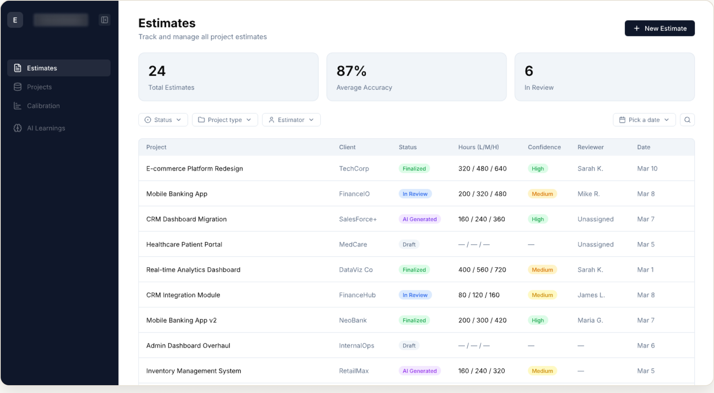
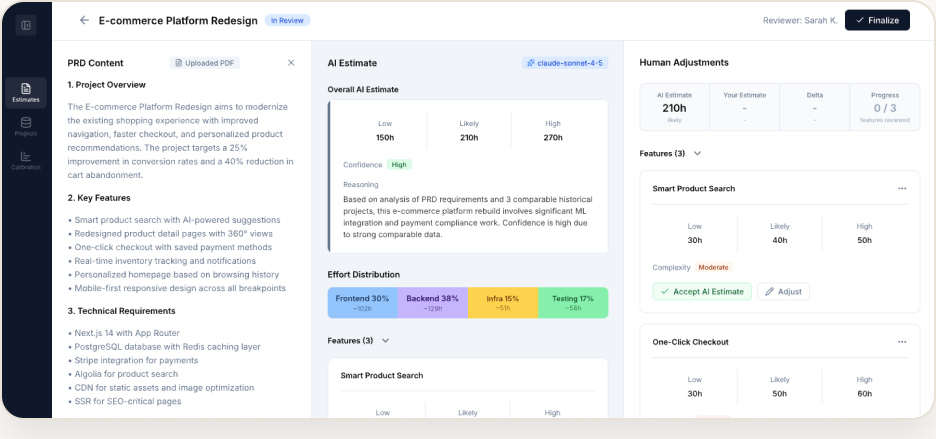
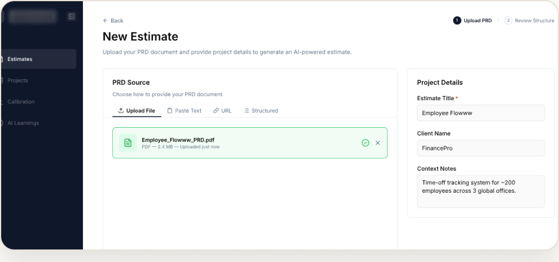

INTERNAL AI TOOLING · RESPONSIVE WEB
The Estimator
An internal AI tool that turns a project brief into a structured, defensible estimate in minutes.
THE PROBLEM
Each new project estimate took 2–4 hours of manual scoping. Estimates varied across people and were hard to defend to a client.
PROCESS
Mapped the estimation flow
Worked with the team to break scoping into inputs the AI could reason over.
Designed the end-to-end UI in Pencil
From brief input to an editable, structured output.
Took it into the repo
With AI assistance, shipped ~52 commits and ~12 PRs to the React/Next.js/Tailwind codebase.
Iterated on real output
Tuned the input/output pipeline against real estimates.
OVERVIEW
I designed and helped build an internal tool where a project brief becomes a structured estimate of scope, phases, and effort that a team can review and defend, instead of starting from a blank page.
IMPACT
≈95% faster
From 2–4 hours to ~10 minutes per estimate.
~52 commits · ~12 PRs
Shipped to the production codebase with AI assistance.
End-to-end
Design and front-end, from brief to output.
SCREENS


